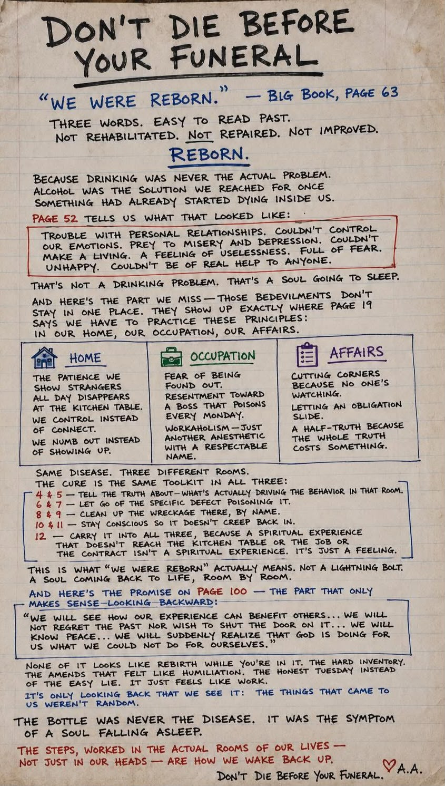

"The bottle was never the disease. It was the symptom of a soul falling asleep."
Don't Die Before
Your Funeral
“We were reborn.” — Big Book, Page 63
Three words. Easy to read past.
Not rehabilitated. Not repaired. Not improved.
Reborn.
Because drinking was never the actual problem.
Alcohol was the solution we reached for once something had already started dying inside us.
Tells us what that looked like:
"Trouble with personal relationships. Couldn't control our emotions. Prey to misery and depression. Couldn't make a living. A feeling of uselessness. Full of fear. Unhappy. Couldn't be of real help to anyone."
That's not a drinking problem. That's a soul going to sleep.
And here's the part we miss — those bedevilments don't stay in one place. They show up exactly where Page 19 says we have to practice these principles:
In our home, our occupation, our affairs.
Home
- The patience we show strangers all day disappears at the kitchen table.
- We control instead of connect.
- We numb out instead of showing up.
Occupation
- Fear of being found out.
- Resentment toward a boss that poisons every Monday.
- Workaholism — just another anesthetic with a respectable name.
Affairs
- Cutting corners because no one's watching.
- Letting an obligation slide.
- A half-truth because the whole truth costs something.
Same disease. Three different rooms.
The cure is the same toolkit in all three:
- 4 & 5 — Tell the truth about — what's actually driving the behavior in that room.
- 6 & 7 — Let go of the specific defect poisoning it.
- 8 & 9 — Clean up the wreckage there, by name.
- 10 & 11 — Stay conscious so it doesn't creep back in.
- 12 — Carry it into all three, because a spiritual experience that doesn't reach the kitchen table or the job or the contract isn't a spiritual experience. It's just a feeling.
This is what “WE WERE REBORN” actually means.
Not a lightning bolt. A soul coming back to life, room by room.
And here's the promise — the part that only makes sense looking backward:
“We will see how our experience can benefit others... We will not regret the past nor wish to shut the door on it... We will know peace... We will suddenly realize that God is doing for us what we could not do for ourselves.”
* These are the Ninth Step Promises. In the Big Book they appear on pp. 83–84 ("Into Action") — the "Page 100" marking on the original is a mismark; page 100 falls in "Working With Others."
None of it looks like rebirth while you're in it. The hard inventory. The amends that felt like humiliation. The honest Tuesday instead of the easy lie.
It just feels like work.
It's only looking back that we see it: The things that came to us weren't random.
Don't Die Before Your Funeral.
🌅 Reborn — room by room
AsleepA soul coming back to life — your reflections and worked steps wake it up.
✨ Interactive Toolkit Focus
Tap any room card, step in the toolkit, or a cell in the Steps × Rooms grid on the page to surface focused guidance right here.
Stay Conscious — Box Breathing
“A soul coming back to life, room by room.”
4-4-4-4 — focus your mind before entering your daily rooms.🔦 Where is your soul asleep?
Check what's true. We'll route you to the right room and steps.
📂 Personal Practice Workspace
Practice these principles in your actual rooms.
Deep dive & prompts ▾
Deep dive & prompts ▾
Deep dive & prompts ▾
🧩 The Toolkit in Every Room
Same cure, three rooms. Tap a cell for what each step looks like there.
🌙 Nightly Spot-Check (Steps 10 & 11)
"Continue to watch for selfishness, dishonesty, resentment, and fear." — p. 84; nightly review, p. 86
Where did it show up today? (tap any that apply)
Last 14 days
The Spiritual Awakening
How a soul wakes back up — room by room — straight from the Big Book.
✍️ The original handwritten reflection
The source transcribed and expanded throughout this guide.

📖 Big Book Reference Map
Every citation on this page, verified against the text. The main text (pp. 1–164) is identically paginated across the 2nd–4th editions; Appendix II pages are the 4th edition (3rd edition: pp. 569–570).
| Concept / Passage | Page |
|---|
Source: Alcoholics Anonymous ("The Big Book"), Alcoholics Anonymous World Services. Citations cross-checked against the public full text and the official A.A. PDFs.